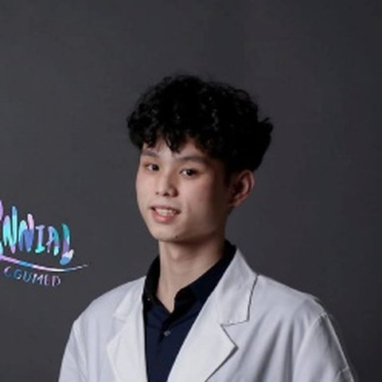
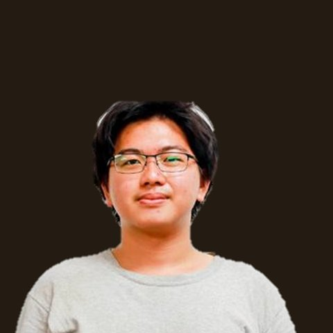
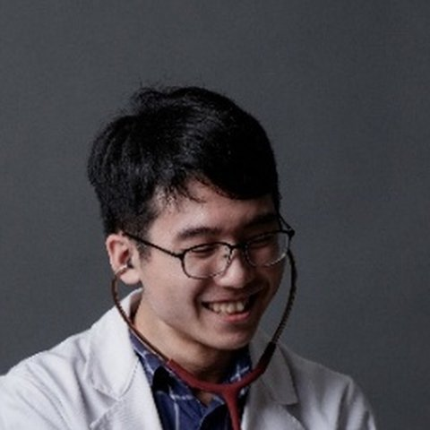
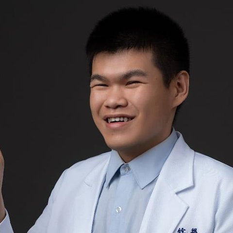

為醫學教育而生的
AI 原生平台。
從虛擬醫學影像庫、虛擬病人教案生成，到臨床推理模型與整合教學平台——Diagmind 以台灣本土醫學知識為底，把醫學教育的每一個環節接上 AI。
我們在做什麼，
為誰而做。
Diagmind 是立足台灣的醫學教育 AI 公司。我們以自研的「臨床推理引擎」為核心，為醫學院與教學醫院打造會引導思考的教學工具——從虛擬病人教案生成、虛擬醫學影像庫，到整合教學平台與值班輔助。
解決的問題
- 臨床教學人力不足——資深醫師忙於臨床，備課與帶教的時間被嚴重壓縮
- 案例資源不均——中小型與偏鄉醫院缺乏足夠的教學案例與影像素材
- 推理訓練斷層——傳統醫學教育偏重記憶背誦，臨床推理難以系統化訓練
目標客群
- 機構端（B2B）——醫學院、教學醫院，與 PGY／住院醫師訓練計畫
- 學生端（B2C）——臨床實習與自我複習中的醫學生
產業背景
- 台灣醫學教育對臨床教學品質的要求持續提高，教學量能卻受限於醫師人力與工時
- 生成式 AI 大幅降低教材製作成本，但醫學內容必須有依據——Diagmind 以「知識檢索＋醫師把關」確保內容有憑有據
五大 AI 模組，
一套臨床推理核心。
從影像、教案、推理模型到整合平台——同一套臨床推理核心，串起醫學教育的每一個環節。
虛擬病人教案生成
老師只要輸入「主題、科別、對象年級、難度」，系統就一鍵生成完整的虛擬病人教案：病例、引導式提問、推理示範與標準答案，備課一次到位。
- 一鍵生成完整虛擬病人教案
- 5–7 個引導式提問
- 推理示範 + 鑑別診斷 + 標準答案
- 教案庫 · 一鍵匯出 Word/PDF
虛擬醫學影像庫
AI 生成的虛擬醫學影像（目前以胸部 X 光 CXR 為主，影像類型持續擴充）。讓真實案例不足的醫院，也能補足內部教學所需的影像素材，做臨床判讀訓練。
- AI 生成的虛擬醫學影像（非真實病人）
- 現以胸部 X 光（CXR）為主
- 影像類型持續擴充
- 補足案例不足，供院內教學判讀
臨床推理模型
把資深臨床醫師的推理過程，變成可生成、可複製的能力——從症狀出發，逐步帶到鑑別診斷、檢查與處置（QRH 引導式）。所有產品共用這一套推理核心。
- QRH 五步驟引導式推理
- 30+ 醫師把關，降低幻覺
- 自動鑑別診斷 + 標準答案
- 中英雙語 · 融入本土
整合教學平台
把教案、課程、評量、影像與學習軌跡串成一條龍：老師生成的內容直接排進課程、轉成評量，學生的個人化複習與學習數據回饋給機構。
- 教案 → 課程 → 評量 一條龍
- 個人化複習 · 盲點追蹤
- 學生學習軌跡分析
- 機構級教學儀表板
DutyAce 值班助手
給值班醫師的 AI 電話分流助手。一晚 50 通電話、手寫紀錄容易漏掉高風險病人——DutyAce 把每通電話轉成卡片，用 TTD（Time-To-Deterioration）演算法排出緊急度，把最危險的病人釘在最上面，直接告訴你「現在該去看哪一床」。
- 每通值班電話 → 結構化卡片
- TTD 演算法排緊急度
- 高風險病人自動置頂
- 直接指引「現在去 X 床」
學生複習平台
為醫學生打造的智慧複習系統——精選高頻、易錯重點，搭配間隔複習與盲點追蹤，讓複習更有效率。學生現在就能開始用。
精選重點
歷年高頻、易錯重點，系統整理。
記憶優化
間隔複習 ＋ 圖像化筆記，記得更牢。
一鍵複習
快速切換科目主題，針對弱點強化。
進度追蹤
看懂進度與盲點，調整複習節奏。
有依據地生成，
而不是憑空想像。
每一份教案，都先從台灣本土醫學知識中找出「事實依據」，再交給生成式 AI 寫成引導式推理——讓內容有憑有據。
老師輸入
主題、科別、對象年級、難度。
醫學知識檢索
先找出與主題相關的醫學依據。
AI 引導式推理
依事實依據寫成 QRH 逐步推理教案。
教案輸出
存入教案庫，可匯出、可上 LMS。
30+ 醫師把關
內容與資料來源皆經 30+ 位醫師逐一把關，不是模型憑空生成，大幅降低幻覺。
QRH 引導式推理
一步步帶學生推理，而不是直接給答案——像航空檢查手冊。
雙語 · 台灣本土
中英雙語皆可，並融入台灣本土用語與臨床標準，可擴充在地臨床指引語料。
一鍵成課
教案可匯出 Word/PDF、上 LMS、進教案庫，直接接上教學流程。
臨床 × AI 的創始團隊。
Diagmind 由臨床醫師創辦、與 AI 研究者共同打造——讓每一個產品決策，同時站得住臨床與技術。

高瑞璋 Jui-Chang Kao
- 長庚大學 醫學系（MD）

許躍薾 Yue-Er Hsu
- 國立臺灣大學 資訊工程學系
- 國立臺灣大學 人工智慧研究所（碩士）

李佳儒
- 長庚大學 醫學系（MD）

尤銓譽
- 國立陽明交通大學 醫學系（MD）
- 國立陽明交通大學 腦造影實驗室
鄭宇宸
- 國立臺灣大學 法律學系
30+ 位合作醫師
- 參與內容審核與案例標註，確保內容的臨床真實性與技術落地性